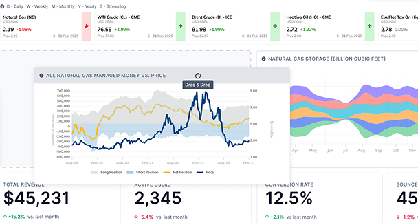
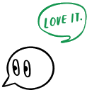

Jacek Waz, Krakow, Poland, 10yrs+
Senior UX/UI Designer | Product Designer
Email: prochow@gmail.com
UX/UI B2B SAAS
& FINTECH WORK
View SaaS & Fintech Work
B2B SaaS & Fintech, Enterprise Dashboards

Measurable outcomes across data-heavy user-configurable SaaS dashboards:
- Time saved every day per operator: +1.5h saved daily. That's 19% of an 8-hour workday
- Increased work efficiency: Task completion speed improved by 45%
- Enhanced user experience: Increase in subjective usability ratings up to 82 pts SUS
- Enhanced user satisfaction: Real leap in usability & user satisfaction up to 88% CSAT

DESIGN SYSTEM -
SAMPLES
Selected Views
View More
color/bg/canvas
White
color/bg/surface
White
color/bg/subtle
Gray-50
color/bg/sidebar
Navy-700
color/bg/accent
Sky-400
FOREX MARKET. WITHDRAWAL
IMPROVEMENT PROCESS
Case Study
Measurable impact across Forex market withdrawal process by transforming the "back to source" requirement from a confusing policy into a visual narrative:
- User anxiety and confusion reduced by 72%
- Understanding of the process increased by 89%
- Number of support tickets reduced by 35%